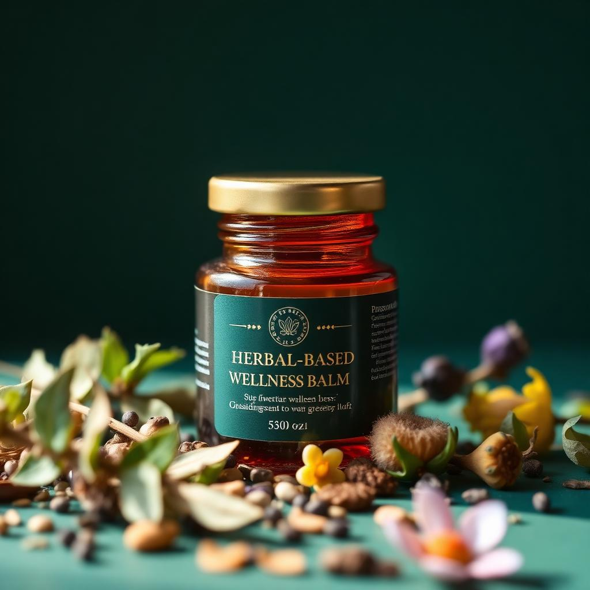

Édition Haïti
Artefact Products — Baume aux plantes
Un baume tendre à base de plantes haïtiennes, pensé comme un geste de douceur pour accompagner le bien-être des personnes touchées par le cancer. À masser, à respirer, à offrir — un rituel simple pour prendre soin de soi.
39 €
Format 50 ml · Livraison sous 3 à 5 jours
Produit de bien-être. Ne remplace pas un avis médical.
Ingrédients
- • Moringa
- • Hibiscus séché
- • Feuille de corossol
- • Huile de coco vierge
- • Cire d'abeille locale
- • Vétiver d'Haïti
Avis clients
★★★★★
« Un rituel doux qui m'a accompagnée pendant les mois les plus difficiles. Merci. »
— Nadège
★★★★★
« Je l'offre à ma sœur. L'attention, l'odeur, le geste — tout est apaisant. »
— Marc
★★★★☆
« Une belle qualité, un vrai soin de soi au quotidien. »
— Cléa
Questions fréquentes
Non. Artefact Products est un produit de bien-être à base de plantes, pensé en accompagnement. Il ne remplace en aucun cas un traitement médical.
Nous vous invitons toujours à en parler avec votre médecin ou votre oncologue avant tout usage complémentaire.
En petites séries, à partir de plantes séchées sélectionnées dans la tradition haïtienne.
Expédition sous 3 à 5 jours ouvrés. Envois internationaux disponibles.